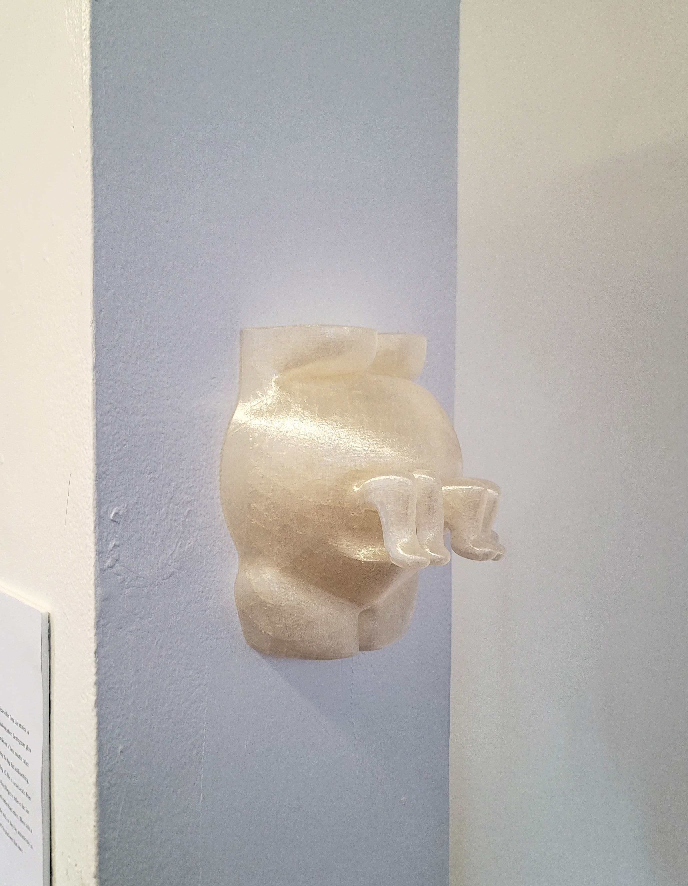
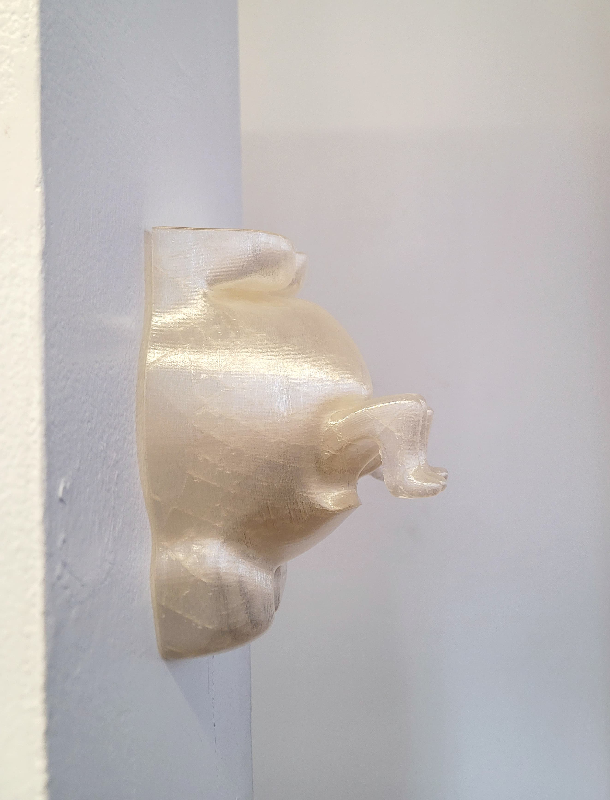
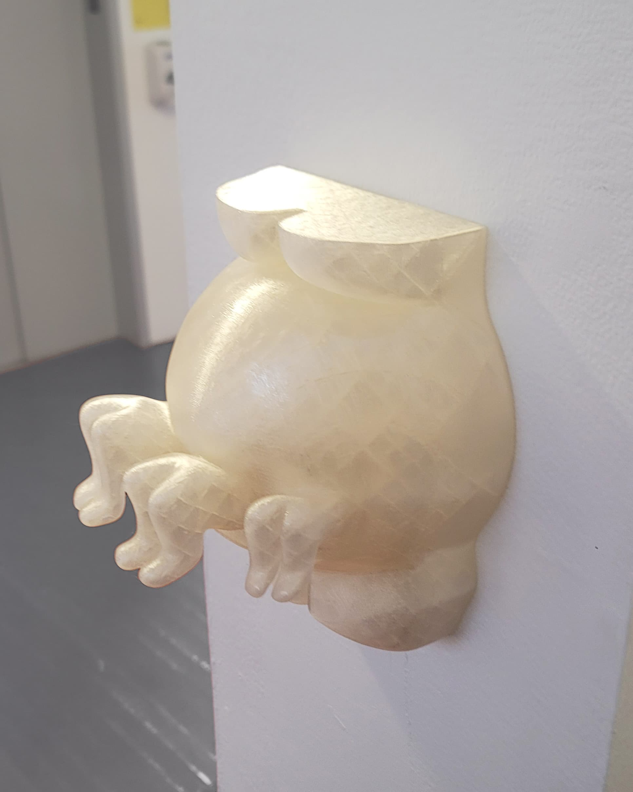

← Back to Fine Art

I created a 3D-printed sculpture of a pregnant belly, from which three legs emerge along the trace of a C-section scar. The work holds the tension between gratitude and resentment within a parent–child relationship. In moments of conflict, I am drawn back to the memory of my mother’s physical labor and dedication in raising three children. By suspending the scar as an object rather than a wound, the piece dwells in the pause before forgiveness, resisting resolution or reconciliation. This work extends my practice by internalizing relational instability, staging care, resentment, and vulnerability not between participants, but within a body marked by irreversible dependence.


